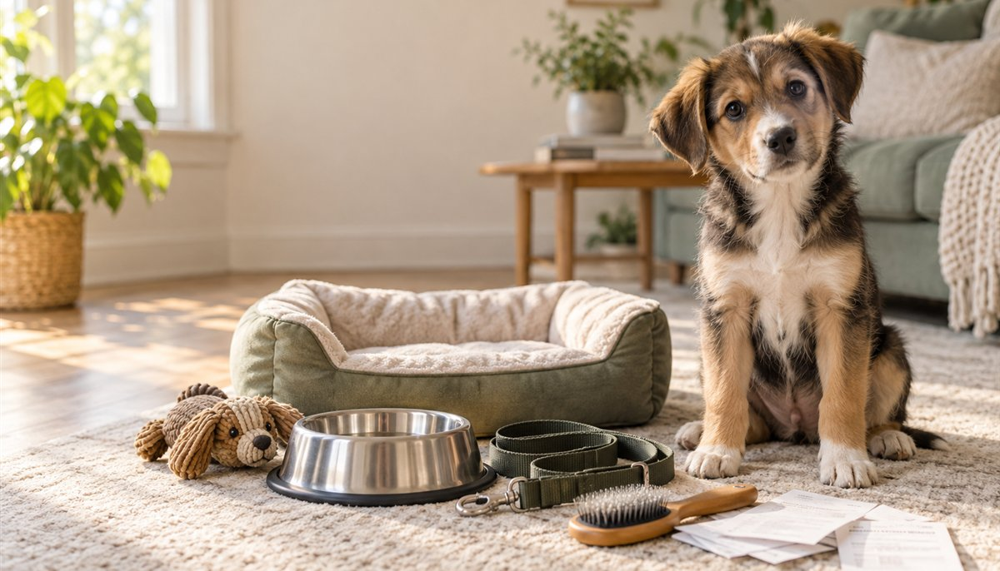

How Much Does a Puppy Cost in the First Year?

The puppy may be the smallest thing in the house, but the first-year budget is not. Adoption or purchase is only the opening line: setup supplies, food, training, routine care and the occasional destroyed bed all arrive afterward. This guide gives you a useful range, then helps you replace every estimate with prices from your own city.
Researched by the CanMyPet Editorial Team · Published September 27, 2026 · Updated October 7, 2026 · Financial planning information, not individualized advice.
A realistic planning worksheet
The ranges below are budgeting prompts in U.S. dollars, not quotes. Get local prices before bringing a puppy home.
| Category | Lean plan | Flexible plan |
|---|---|---|
| Adoption or purchase | Enter your actual fee | Enter your actual fee |
| Crate, bed, gates, bowls, leash and toys | $200–$400 | $400–$900 |
| Food and training treats | $350–$700 | $700–$1,400 |
| Routine care and preventives | Get a local clinic estimate | Get a local clinic estimate |
| Group training | $150–$300 | $300–$700+ |
| Grooming and replacements | $100–$300 | $300–$900+ |
| Insurance or emergency savings | Choose one funded plan | Insurance plus deductible reserve |
Why no single veterinary number? Clinic pricing, local requirements, the puppy's existing records and individual care plan vary too much. Ask the clinic for a written first-year estimate covering the services they recommend for your puppy.
The five costs people underestimate
1. Buying the same item twice
A growing puppy may outgrow a harness, crate divider setup or bed. Teething also turns “durable” into a temporary concept. Buy safe essentials, but delay premium versions until you know the puppy's adult size and habits.
2. Help during the workday
A young puppy cannot simply match an eight-hour workday. A sitter, walker, family member or adjusted schedule may be necessary. Price this before pickup; it can exceed food and toys combined.
3. Training beyond one class
A group foundations course is a strong start, not an entire education. Budget for follow-up classes or one private session if a specific challenge appears. Early support is usually easier than repairing a rehearsed habit later.
4. Breed and coat requirements
A large dog eats more; a continuously growing coat needs regular grooming; short-nosed or giant breeds may have different insurance pricing. “Dog average” is less useful than a budget based on expected adult size and coat.
5. The inconvenient emergency
Insurance and savings solve different problems. Insurance may reimburse covered claims after a deductible; cash savings can pay immediately and cover exclusions. Read policy terms carefully and decide how you would pay a large bill on a weekend.
What current benchmarks can — and cannot — tell you
The ASPCA's published U.S. worksheet lists a $3,221 first-year dog total, but labels its table as a 2021 update, so it is best treated as a historical baseline rather than a 2026 quote. The AKC has published an average near $3,085 across dog sizes, while also warning that many estimates run low. For one current reference point, AAHA reports that the 2026 average annual premium for dog accident-and-illness insurance is about $836; an individual quote can be very different.
The useful lesson is not that one total is “correct.” It is that food, supplies, training, routine care, insurance and an emergency plan all need separate lines.
Your puppy's first year, stage by stage
Costs do not arrive evenly. They come in waves, and knowing which wave is next keeps a surprise from becoming a crisis.
| Stage | What usually lands on your budget |
|---|---|
| Before pickup | Crate, bed, gates, bowls, leash, harness, chew toys, cleaning supplies, and a first vet appointment booked for the first few days |
| Weeks 8–16 | A series of vet visits for vaccines and checks (many vets repeat them every few weeks until about 16 weeks), a microchip, parasite prevention, puppy food and lots of training treats, plus a foundations class |
| Months 4–6 | Teething replacements, a bigger harness, a possible second class, and a conversation with your vet about spay/neuter timing |
| Months 6–12 | Adolescent chewing and escape attempts, grooming for coats that need it, a step up to adult-size gear, and renewal of any insurance policy |
The point of the table is the pattern, not the dollar amounts: the heaviest vet and gear spending is packed into the first four months, so keep a buffer ready before you pick your puppy up.
Adopting vs. buying: compare the whole package
An adoption fee and a breeder's price are not the same kind of number. Before comparing, ask what each includes:
- Vaccines and deworming: which have been given, and what is still due.
- Microchip and registration: whether it is included or an extra step.
- Spay/neuter: done already, covered by a voucher, or yours to schedule.
- Health records and any guarantee: get them in writing.
A lower fee that leaves you paying for three services can end up the same as a higher fee that covers them. Put both into one comparison before you decide. If you are still deciding on a breed, our Breed Finder helps you match size and coat to your budget.
Insurance vs. an emergency fund: how to read the fine print
Whichever you choose, know exactly how it works before you need it:
- Deductible: what you pay before reimbursement starts, per year or per condition.
- Reimbursement rate: the percentage of an eligible bill the insurer pays back.
- Waiting periods: a window after you enroll in which some claims are not covered.
- Exclusions: pre-existing conditions are generally not covered, and some policies exclude hereditary or breed-linked conditions or routine care unless you add a wellness plan.
- Payment timing: most insurers reimburse after you pay, so you still need cash or a credit line on the day.
AAHA's guidance on pet insurance, linked below, is a good neutral starting point. If you choose savings instead, open a separate account and name it so it is not spent on everyday things.
Eight ways to spend less without cutting safety
- Buy the adult-size version only when you know your puppy's size.
- Use cheap, safe treats for training. Small pieces of carrot, green beans, blueberries or plain cooked chicken cost less than packaged treats. Count them toward the daily calorie total, since treats should stay at about 10% of calories.
- Read labels for xylitol. A treat or peanut butter containing it is an emergency, not a bargain. See our xylitol guide.
- Get two or three written vet estimates. Compare the same list of services rather than the final price alone.
- Choose a group class over repeated private lessons for foundations, and save private sessions for a specific problem.
- Rotate toys instead of buying new ones. Inspect them often and discard damaged ones.
- Learn basic grooming at home for short coats, and budget a professional for coats that grow continuously.
- Prevent the avoidable emergency. Keep trash, chocolate, grapes and medicine out of reach; our list of foods toxic to dogs covers the usual suspects, and the emergency tool helps when something is swallowed.
Planning for the holidays and travel
Boarding, sitters and last-minute travel are the costs that spike in November and December. Reserve early, ask what proof of vaccination the facility requires, and see our dog boarding checklist. Holiday leftovers are another quiet expense: a dog who eats the Thanksgiving turkey skin or a candy bowl can mean an urgent vet visit, so see Thanksgiving foods dangerous for pets before the season starts.
After year one: what to expect
Many early costs, such as the setup and the vaccine series, will not repeat, but food, parasite prevention, annual exams, grooming, boarding and insurance premiums continue for the dog's whole life. Planning a monthly figure now makes year two much calmer. The related guide on how much time a dog needs covers the other budget your puppy will ask for: your hours.
Build your personal number in five minutes
- Open the pet cost calculator.
- Use the expected adult size, not today's puppy weight.
- Replace default estimates with one local food price, one clinic estimate and one training quote.
- Add workday care if nobody can provide the needed breaks.
- Create a separate emergency line and decide where that money will live.
Frequently asked questions
How much should I save before bringing a puppy home?
Add up your setup costs, three months of food and supplies, a first-visit vet estimate and a separate emergency cushion, then keep that emergency money apart from everyday spending. Our pet cost calculator lets you replace each line with local prices.
Is it cheaper to adopt a puppy than to buy one?
The upfront fee is often lower with a shelter or rescue, and some adoption fees already include vaccines, microchipping or spay/neuter. Ask for a written list of what is included so you do not pay twice. The ongoing costs of food, training and care are the same either way.
Is pet insurance worth it for a puppy?
It depends on how you would pay a large bill. Insurance can reimburse covered claims after a deductible, but it usually excludes pre-existing conditions and has waiting periods, so enrolling while your puppy is healthy matters. Cash savings pay immediately and cover exclusions. Some families fund both.
Which costs surprise new puppy owners most?
Replacing outgrown gear, paying for help during the workday, training beyond one class and the first unplanned vet visit, such as a swallowed sock or an upset stomach from something eaten off the floor.
Do puppies cost more in the first year than later?
Often yes, because setup, vaccine series, spay/neuter decisions and training all cluster in the first 12 months. Food and routine care then become steadier, though costs rise again with age-related care.
How can I lower the cost without cutting corners on safety?
Buy fewer, safer essentials first, use plain vegetable treats for training, compare written clinic estimates, and put money toward preventive care and training, which tend to cost less than fixing problems later. Skip bargain chew toys that can break into pieces.
What should a vet's first-year estimate include?
Exam visits, the vaccine series your vet recommends, parasite prevention, microchipping, spay/neuter if planned, and any testing they advise. Ask them to list what is optional so you can plan around it.
Sources
- ASPCA — Cutting Pet Care Costs (table marked 2021)
- American Kennel Club — How Much Does It Cost to Raise a Dog?
- AAHA — What pet owners need to know about pet insurance
- AVMA — Selecting a pet dog
Prices are planning estimates. This guide is for information only and is not veterinary or financial advice; confirm costs and care decisions with your own vet and local providers. Expanded by the CanMyPet editorial team on 7 October 2026.